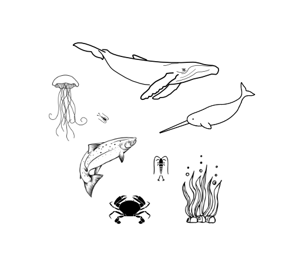
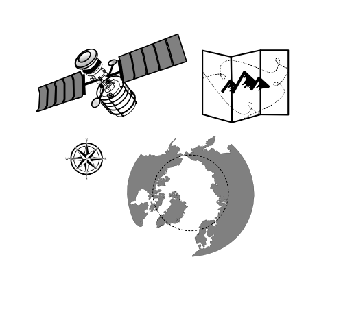

8 Data Ethics for Scalable Computing
8.1 Learning objectives
- Review FAIR and CARE Principles, and their relevance to data ethics
- Examine how ethical considerations are shared and considered at the Arctic Data Center
- Discuss ethical considerations in machine learning
8.2 Intro to Data Ethics

The Arctic Data Center is an openly-accessible data repository. The data published through it is open for anyone to reuse, subject to one of two licenses: CC-0 Public Domain and CC-By Attribution 4.0. As an open access repository, we prioritize long-term preservation and embrace principles from the data stewardship community, which established a set of best practices for open data management. In adherence, two principles adopted by the Arctic Data Center are FAIR Principles (Findable, Accessible, Interoperable, and Reproducible) and CARE Principles for Indigenous Governance (Collective Benefit, Authority to Control, Responsibility, Ethics). Both of which serve as frameworks in how to consider data ethics.
The FAIR Principles
FAIR speaks to how metadata is managed, stored, and shared.

What is the difference between FAIR principles and open science?
FAIR principles and open science are overlapping concepts, but are distinctive from one another. Open science supports a culture of sharing research outputs and data, and FAIR focuses on how to prepare the data. The FAIR principles place emphasis on machine readability, “distinct from peer initiatives that focus on the human scholar” (Wilkinson et al 2016) and as such, do not fully engage with sensitive data considerations and with Indigenous rights and interests (Research Data Alliance International Indigenous Data Sovereignty Interest Group, 2019). Metadata can be FAIR but not open. For example, sensitive data (data that contains personal information) may not be appropriate to share, however sharing the anonymized metadata that is easily understandable will reduce research redundancy.
{kind=link}
Research has historically perpetuated colonialism and represented extractive practices, meaning that the research results were not mutually beneficial. These issues also related to how data was owned, shared, and used. To address issues like these, the Global Indigenous Data Alliance (GIDA) introduced CARE Principles for Indigenous Data Governance to support Indigenous data sovereignty. CARE Principles speak directly to how the data is stored and shared in the context of Indigenous data sovereignty. CARE Principles (Carroll et al. 2020) stand for:
Collective Benefit - Data ecosystems shall be designed and function in ways that enable Indigenous Peoples to derive benefit from the data
Authority to Control - Indigenous Peoples’ rights and interests in Indigenous data must be recognized and their authority to control such data be empowered. Indigenous data governance enables Indigenous Peoples and governing bodies to determine how Indigenous Peoples, as well as Indigenous lands, territories, resources, knowledges and geographical indicators, are represented and identified within data.
Responsibility - Those working with Indigenous data have a responsibility to share how those data are used to support Indigenous Peoples’ self-determination and collective benefit. Accountability requires meaningful and openly available evidence of these efforts and the benefits accruing to Indigenous Peoples.
Ethics - Indigenous Peoples’ rights and wellbeing should be the primary concern at all stages of the data life cycle and across the data ecosystem.
To many, the FAIR and CARE principles are viewed by many as complementary: CARE aligns with FAIR by outlining guidelines for publishing data that contributes to open-science and at the same time, accounts for Indigenous’ Peoples rights and interests (Carroll et al. 2020).
In Arctic-based research, there is a paradigm shift to include more local Indigenous Peoples, their concerns, and knowledge throughout the research process (Loseto 2020). At the 2019 ArcticNet Annual Scientific Meeting (ASM), a 4-hour workshop was held between Indigenous and non-Indigenous participants to address the challenge of peer-reviewed publications arising when there is a lack of co-production and co-management in the research process between both groups. In the context of peer review, involving Indigenous People and Indigenous Knowledge (IK) not only can increase the validity of research findings, but also ensure the research is meaningful to those most impacted by it. Moreover, it gives power back to the appropriate people to decide who can be knowledge holders of Indigenous knowledge (Loseto et al. 2020). This example underscores the advocacy CARE framework for Indigenous sovereignty, emphasizing the essential integration of people and purpose in the peer review publication stage. Failure to do so perpetuates power imbalances between science institutions and Indigenous communities. Hence, an equitable framework would adhere to the idea ‘Not about us without us’. As an Arctic research community, it is important to reflect on ways we can continue to engage and incorporate Indigenous communities and if there are gaps to address. However, it is important there is no ‘one size fits all’ approach.
8.3 Ethics at the Arctic Data Center
Transparency in data ethics is a vital part of open science. Regardless of discipline, various ethical concerns are always present, including professional ethics such as plagiarism, false authorship, or falsification of data, to ethics regarding the handling of animals, to concerns relevant to human subjects research. As the primary repository for the Arctic program of the National Science Foundation, the Arctic Data Center accepts Arctic data from all disciplines. A data submission feature asks researchers to describe the ethical considerations that are apparent in their research. This question is asked to all researchers, regardless of disciplines.
{kind=link}
{kind=link}
Sharing ethical practices openly, similar in the way that data is shared, enables deeper discussion about data management practices, data reuse, sensitivity, sovereignty and other considerations. Further, such transparency promotes awareness and adoption of ethical practices.
Inspired by CARE Principles for Indigenous Data Governance (Collective Benefit, Authority to Control, Responsibility, Ethics) and FAIR Principles (Findable, Accessible, Interoperable, Reproducible), we include a space in the data submission process for researchers to describe their ethical research practices. These statements are published with each dataset, and the purpose of these statements is to promote greater transparency in data collection and to guide other researchers. For more information about the ethical research practices statement, check out this blog.
To help guide researchers as they write their ethical research statements, we have listed the following ethical considerations that are available on our website. The concerns are organized first by concerns that should be addressed by all researchers, and then by discipline.
Consider the following ethical considerations that are relevant for your field of research.
8.3.1 Ethical Considerations for all Arctic Researchers
Research Planning
- Were any permits required for your research?
- Was there a code of conduct for the research team decided upon prior to beginning data collection?
- Was institutional or local permission required for sampling?
- What impact will your research have on local communities or nearby communities (meaning the nearest community within a 100 mile radius)?
Data Collection
- Were any local community members involved at any point of the research process, including study site identification, sampling, camp setup, consultation or synthesis?
- Were the sample sites near or on Indigenous land or communities?
Data Sharing and Publication
- How were the following concerns accounted for: misrepresentation of results, misrepresentation of experience, plagiarism, improper authorship, or the falsification or data?
- If this data is intended for publication, are authorship expectations clear for everyone involved? Other professional ethics can be found here
8.3.2 Archaeological and Paleontological Research
Research Planning
- Were there any cultural practices relevant to the study site? If yes, how were these practices accounted for by the research methodologies.
Data Collection
- Did your research include the removal or artifacts?
- Were there any contingencies made for the excavation and return of samples after cleaning, processing, and analysis?
Data Sharing and Publication
- Were the samples deposited to a physical repository?
- Were there any steps taken to account for looting threats? Please explain why or why not?
8.3.3 Human Participation and Sensitive Data
Research Planning
- Please describe the institutional IRB approval that was required for this research.
- Was any knowledge provided by community members?
Data Collection
- Did participants receive compensation for their participation?
- Were decolonization methods used?
Data Sharing and Publication
- Have you shared this data with the community or participants involved?
8.3.4 Marines Sciences (e.g. Marine Biology Research)

Research Planning
- Were any of the study sites or species under federal or local protection?
Data Collection
- Were endangered, threatened, or otherwise special-status species collected?
- How were samples collected? Please describe any handling practices used to collect data.
- What safety measures were in place to keep researchers, research assistants, technicians, etc., out of harms way during research?
- How were animal care procedures evaluated, and do they follow community norms for organismal care?
Data Sharing and Publication
- Did the species or study area represent any cultural importance to local communities, or include culturally sensitive information? Please explain how you came to this conclusion and how any cultural sensitivity was accounted for.
8.3.5 Physical Sciences (e.g. Geology, Glaciology, and Ice Research)

Research Planning
- Was any knowledge provided by community members, including information regarding the study site?
Data Collection
- What safety measures were in place to keep researchers, research assistants, technicians, etc., out of harms way during research?
- Were there any impacts to the environment/habitat before, during or after data collection?
Data Sharing and Publication
- Is there any sensitive information including information on sensitive sites, valuable samples, or culturally sensitive information?
8.3.6 Plant and Soil Research

Research Planning
- Were any of the study sites protected under local or federal regulation?
- Was any knowledge provided by nearby community members, including information regarding the study site?
Data Collection
- Did sample collection result in erosion of soil or other physical damage? If so, how was this addressed?
- What safety measures were in place to keep researchers, research assistants, technicians, etc., out of harms way during research?
Data Sharing and Publication
- Do any of the study sites or specimens represent culturally sensitive areas or species? Please explain how you came to this conclusion, and if yes, how was this accounted for?
8.3.7 Spatial Data

Research Planning
- Were any land permits required for this research?
Data Collection
- Were any data collected using citizen science or community participation?
- If yes, were community members compensated for their time and made aware of their data being used and for what purpose?
Data Sharing and Publication
- If data were ground-truthed, was institutional or local permissions required and/or obtained for land/property access?
- Have you shared this data with the community or participants involved?
- If location sensitive data was obtained (endangered/threatened flora & fauna location, archaeological and historical sites, identifiable ships, sensitive spatial information), how were the data desensitized?
8.3.8 Wildlife Sciences (e.g. Ecology and Biology Research)
Research Planning
- Were any permits required for data sampling?
Data Collection
- Were endangered, threatened, or otherwise special-status plants or animal species collected?
- How were samples collected? Please describe any handling practices used to collect data.
- What safety measures were in place to keep researchers, research assistants, technicians, etc., out of harms way during research?
- How were animal care procedures evaluated, and do they follow community norms for organism care?
Data Sharing and Publication
- Do any of the study sites or specimens represent culturally sensitive areas or species? Please explain how you came to this conclusion, and if yes, how was this accounted for?
Menti question:
- Have you thought about any of the ethical considerations listed above before?
- Were any of the considerations new or surprising?
- Are there any for your relevant discipline that are missing?
8.4 Ethics in Artificial Intelligence
Menti poll
- What is your level of familiarity with machine learning
- Have you thought about ethics in machine learning prior to this lesson?
- Can anyone list potential ethical considerations in machine learning?
8.4.1 Introduction
Artificial Intelligence (AI) can be thought of as the development of computer systems that can perform tasks we usually think require human intelligence, such as image recognition, language translation, or autonomous movement. The rapid development and adoption of AI tools in the past years, particularly machine learning algorithms, has revolutionized how big datasets are analyzed, transforming decision-making in all sectors of society. However, frameworks to examine the ethical considerations of AI are just emerging, and careful consideration of how to best develop and apply AI systems is essential to the responsible use of these new, rapidly changing tools. In this section, we will give an overview of the FAST Principles put forward by the Alan Turing Institute in their guide for the responsible design and implementation of AI systems (Leslie, 2019).
8.4.2 The FAST Principles
FAST stands for Fairness, Accountability, Sustainability, and Transparency. The FAST principles aim to guide the ethical development of AI projects from their inception to deployment. The continuous involvement and commitment of software developers, domain experts, technical leads, project managers, rightsholders, and collaborators involved in the AI project is crucial to implement these principles successfully. The following is a brief overview of each of the FAST principles, we greatly encourage you to read through the Alan Turing Institute guide to learn more!

8.4.3 Fairness
Bias can enter at any point of a research project, from data collection and preprocessing, to model design and implementation. This is because AI projects, as any other, are created by human beings who (even with the best of intentions) can introduce error, prejudice, or misjudgement into a system. Fairness refers to the active minimization of bias and commitment to not harm others through the outcomes of an AI system. FAST principles (Leslie, 2019) suggest the following baseline for fairness:
“The designers and users of AI systems ensure that the decisions and behaviours of their models do not generate discriminatory or inequitable impacts on affected individuals and communities. This entails that these designers and users ensure that the AI systems.” (Leslie, 2019)
They are developing and deploying:
- Are trained and tested on properly representative, relevant, accurate, and generalisable datasets (Data Fairness)
- Have model architectures that do not include target variables, features, processes, or analytical structures (correlations, interactions, and inferences) which are unreasonable, morally objectionable, or unjustifiable (Design Fairness)
- Do not have discriminatory or inequitable impacts on the lives of the people they affect (Outcome Fairness)
- Are deployed by users sufficiently trained to implement them responsibly and without bias (Implementation Fairness)
The following figure (McGovern et al., 2022) shows coverage of the national Doppler weather network (green and yellow circles) over a demographic map of the Black population in the southeast US. This would be an example of an issue in data fairness, since radar coverage does not represent the population uniformly, leaving out areas with higher Black population. Problems with outcome fairness could ensue if this non-representative biases an AI model to under-predict weather impacts in such populations.
{kind=link}
8.4.4 Accountability
Accountability in AI projects stems from the shared view that isolated AI models used to automate decisions are not morally responsible in the same way as a decision-making human. As outputs from AI models are increasingly used to make decisions that affect the environment and human lives, there is a critical need for competent human authorities to offer explanations and justifications for the development process, outputs, and ensuing decisions made by AI systems. Such answerability assignments can be challenging, as AI implementations are often the product of big development teams where the responsibility to answer for a project’s outcome may not be delineated, creating an issue known as “the problem of many hands.” The FAST principles encourage the following accountability implementation:
Accountability by Design: All AI systems must be designed to facilitate end-to-end answerability and auditability. This requires both responsible humans-in-the-loop across the entire design and implementation chain as well as activity monitoring protocols that enable end-to-end oversight and review.
Accountability and the ability to audit AI methods can be crucial when model outputs support critical decision-making, such as in natural disasters. In 2021, a New York Times investigation (Fink, 2021) covered a private company’s premature release of outputs about neighborhoods most affected by potential earthquakes in Seattle. While the initial release erroneously did not show threats for non-residential areas, ensuing updated versions showed non-compatible predictions again. Although the company acknowledged that its AI models would not replace the first responder’s judgment, the lack of audibility and opacity in the model development hindered accountability for any party, ultimately eroding the public confidence in the tools and leading to a loss of public resources.
{kind=link}
8.4.5 Sustainability
Sustainability in the FAST principles includes continuous assessment of the social impacts of an AI system and technical sustainability of the AI model. In the first consideration, the FAST principles advocate for performing a Stakeholder Impact Assessment (SIA) at different stages to help build confidence in the project and uncover unexpected risks or biases, among other benefits. The Alan Turing Institute guide shares a prototype of an SIA (Leslie, 2019). The core of technical sustainability is creating safe, accurate, reliable, secure, and robust AI systems. To achieve these technical goals, teams must implement thorough testing, performance metrics, uncertainty quantification, and be aware of changes to the underlying distribution of data, among other essential practices.
The SpaceCows project (Shepherd, 2021; ABC Australia, 2024) in northern Australia is a collaboration between scientists, industry leaders, and local indigenous communities developing AI centered platforms to analyze GPS tracking data collected from feral cows alongside satellite imagery and weather data. Indigenous knowledge and traditional land owners have been at the center of the development, providing guidance and ultimately benefiting from the AI tools to protect their land and cultural sites.
{kind=link}
Important indigenous cultural sites can be damaged by feral cattle. Image from CSIRO, SpaceCows: Using AI to tackle feral herds in the Top End.
8.4.6 Transparency
Under the FAST principles, transparency in AI projects refers to transparency about how an AI project was designed and implemented and the content and justification of the outcome produced by the AI model. To ensure process transparency, the project should show how the design and implementation included ethical, safety, and fairness considerations throughout the project. To clarify the content and explain the outcomes of an AI system, the project should offer plain language, non-technical explanations accessible to non-specialists that convey how and why a model performed the way it did. In this direction, it is essential to avoid a ‘mathematical glass box’ where the code and mathematics behind the algorithm are openly available, but there is a lack of rationale about how or why the model goes from input to output. Finally, the explanations about how the outcomes were produced should become the basis to justify the outcomes in terms of ethical permissibility, fairness, and trustworthiness. A careful consideration of the balance between the sustainability and transparency principles is necessary when dealing with protected or private data.
The concern for transparency in using personal data is an active space for debate. In 2018, the French government passed a law to protect citizens’ privacy, establishing the citizen’s “right to an explanation” regarding, among other things, how an algorithm contributed to decisions on their persona and which data was processed (Edwards and Veale, 2018; Lo Piano, 2020). Overall, this legislation aims to create a fairer and more transparent digital environment where everyone can enjoy equal opportunities.
{kind=link}
8.4.7 Conclusion
As new AI developments and applications rapidly emerge and transform everyday life, we need to pause and ensure these technologies are fair, sustainable, and transparent. We must acknowledge human responsibility in designing and implementing AI systems to use these novel tools fairly and with accountability. Finally, we acknowledge that the information covered here is a lightning introduction to AI’s ethical considerations and implications. Whether you are a researcher interested in using AI for the first time or a seasoned ML practitioner, we urge you to dive into the necessary and ever-expanding AI ethics work to learn how to best incorporate these concepts into your work.
8.4.8 Discussion Activity
Given the discussion of the CARE priciples and the FAST principles, let’s discuss what responsible AI considerations might exist in the context of Arctic research, particularly with respect to Indigneous peoples of the Arctic. Geospatial data spanning the Arctic typically includes the traditional lands and waters of Arctic Indigenous peoples, and often intersects with current local communities distributed throughout the Arctic. Recent work by projects like Abundant Intelligences are starting to explore the intersection of Indigineous Knowledge systems, Artifical Intelligence models, and how to guide the “development of AI [to support] a more humane future”.
Let’s take, for example, a researcher that wants to run an machine learning model to detect changes in environmental features at a large regional or Arctic scale. We’ve seen several of these so far, including 1) AI predictions of the distribution of permafrost ice wedges and retrogressive thaw slumps across the Arctic; 2) use of AI to detect changes in surface water extent and lake drainage events across the Arctic; 3) use of AI in a mechanistic process models that helps understand the global source/sink tradeoff of permafrost loss and its impact on climate.
Divide into groups, find a comfortable place to sit, and pick a large-scale AI application that is of interest to the group. Let’s discuss some of the following questions:
- Thinking of CARE, does that model provide Collective Benefit to Indigenous populations that it might impact?
- Thinking of FAST, what would researchers need to do to ensure that their research process could meet the goals of the four categories of Fairness (Outcome Fairness, Data Fairness, Design Fairness, and Implementation Fairness) for Indigenous people in their research area?
8.5 References and Further Reading
Carroll, S.R., Herczog, E., Hudson, M. et al. (2021) Operationalizing the CARE and FAIR Principles for Indigenous data futures. Sci Data 8, 108 https://doi.org/10.1038/s41597-021-00892-0
Chen, W., & Quan-Haase, A. (2020) Big Data Ethics and Politics: Towards New Understandings. Social Science Computer Review. https://journals.sagepub.com/doi/10.1177/0894439318810734
Crawford, K., & Paglen, T. (2019) Excavating AI: The Politics of Training Sets for Machine Learning. https://excavating.ai/
Edwards, Lilian, and Michael Veale. (2017). Enslaving the algorithm: From a right to an explanationn to a right to better decisionss?. SSRN Electronic Journal. https://doi.org/10.2139/ssrn.3052831.
Fink, Sheri. (2019). “This High-Tech Solution to Disaster Response May Be Too Good to Be True.” The New York Times. www.nytimes.com/2019/08/09/us/emergency-response-disaster-technology.html.
Gray, J., & Witt, A. (2021) A feminist data ethics of care framework for machine learning: The what, why, who and how. First Monday, 26(12), Article number: 11833
Leslie, D. (2019). Understanding artificial intelligence ethics and safety: A guide for the responsible design and implementation of AI systems in the public sector. The Alan Turing Institute. https://doi.org/10.5281/zenodo.3240529
L.L.Loseto, K.Breton-Honeyman, D.N.Etiendem, N.Johnson, T.Pearce, J.Allen, A.Amos, J.Arqviq, J.E.Baak, É.Bélanger, M.P.T.Bourdages, J.R.Brammer, D.Fawcett, J.Gérin-Lajoie, G.Gilbert, K.Hansen-Craik, E.Loring, A.Perrin, and M.Slavitch. 2020. Indigenous participation in peer review publications and the editorial process: reflections from a workshop. Arctic Science. 6(3): 352-360. https://doi.org/10.1139/as-2020-0023
Lo Piano, S. (2020). Ethical principles in machine learning and artificial intelligence: cases from the field and possible ways forward. Humanit Soc Sci Commun 7, 9. https://doi.org/10.1057/s41599-020-0501-9
McGovern, A., Ebert-Uphoff, I., Gagne, D. J., & Bostrom, A. (2022). Why we need to focus on developing ethical, responsible, and trustworthy artificial intelligence approaches for environmental science. Environmental Data Science, 1, e6. doi:10.1017/eds.2022.5
O’Brien, Kristy. (2023). Indigenous Rangers Team up with Scientists for Project SpaceCows, the next Frontier in Feral Pest Control. SpaceCows Surveillance Project Unites Indigenous Rangers, CSIRO in Huge Bovine Mustering Effort. www.abc.net.au/news/rural/2023-11-19/spacecows-csiro-indigenous-rangers-buffalo-surveillance/103103624.
Puebla, I., & Lowenberg, D. (2021) Recommendations for the Handling for Ethical Concerns Relating to the Publication of Research Data. FORCE 11. https://force11.org/post/recommendations-for-the-handling-of-ethical-concerns-relating-to-the-publication-of-research-data/
Research Data Alliance International Indigenous Data Sovereignty Interest Group. (2019). “CARE Principles for Indigenous Data Governance.” The Global Indigenous Data Alliance. GIDA-global.org
Shepard, Tory. (2021) Indigenous Rangers to Use SpaceCows Program to Protect Sacred Sites and Rock Art from Feral Herds.” The Guardian, Guardian News and Media. www.theguardian.com/australia-news/2021/sep/15/indigenous-rangers-to-use-spacecows-program-to-protect-sacred-sites-and-rock-art-from-feral-herds.
Wilkinson, M., Dumontier, M., Aalbersberg, I. et al. (2016) The FAIR Guiding Principles for scientific data management and stewardship. Sci Data 3, 160018. https://doi.org/10.1038/sdata.2016.18
Zwitter, A., Big Data ethics. (2014) Big Data and Society. DOI: 10.1177/2053951714559253
(2021). SpaceCows: Using AI to Tackle Feral Herds in the Top End. CSIRO. www.csiro.au/en/news/all/news/2021/september/spacecows-using-ai-to-tackle-feral-herds-in-the-top-end.
Videos with more information on SpaceCows:
CSIRO rolls out world’s largest remote ‘space cows’ herd management system